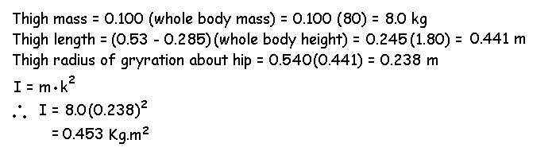

Moment of Inertia (Continued)
Not all objects can be represented as the examples on the previous page. Most objects including human limb segments have their mass distributed irregularly from one end to the other. In such cases, we use the following formula to calculate the moment of inertia.

The value "k" is called the radius of gyration. It can be defined as that distance from the axis that the mass can be concentrated without altering the moment of inertia about that axis. The radius of gyration can be determined experimentally by oscillating the object as a pendulum but this method will be covered later in the Advanced Anthropometry lecture. For now, we will use the Table values determined by Dempster to calculate the moment of inertia about the CofG, proximal and distal ends of human body segments. These "k" values are listed in columns 6, 7, and 8, respectively and they are scaled to the segment length.
| Center of Mass /Segment length | Radius of Gyration / Segment length |
| Segment | Definition | segment mass/total body mass | proximal | distal | CofG | proximal | distal | density |
| Hand | Wrist axis/knuckle II middle finger | 0.006 | 0.506 | 0.494 | 0.297 | 0.587 | 0.577 | 1.16 |
| Forearm | Elbow axis/ulnar styloid | 0.016 | 0.430 | 0.570 | 0.303 | 0.526 | 0.647 | 1.13 |
| Upper arm | Glenohumeral axix/elbow axis | 0.028 | 0.436 | 0.564 | 0.322 | 0.542 | 0.645 | 1.07 |
| Forearm and Hand | Elbow axis/ulnar styloid | 0.022 | 0.682 | 0.318 | 0.468 | 0.827 | 0.565 | 1.14 |
| Total arm | Glenohumeral joint/ulnar styloid | 0.050 | 0.530 | 0.470 | 0.368 | 0.645 | 0.596 | 1.11 |
| Foot | Lateral malleolus/head metatarsal II | 0.0145 | 0.50 | 0.50 | 0.475 | 0.690 | 0.690 | 1.10 |
| Leg | Femoral condyles/medial malleolus | 0.0465 | 0.433 | 0.567 | 0.302 | 0.528 | 0.643 | 1.09 |
| Thigh | Greater trochanter/femoral condyles | 0.100 | 0.433 | 0.567 | 0.323 | 0.540 | 0.653 | 1.05 |
| Foot and leg | Femoral condyles/medial malleolus | 0.061 | 0.606 | 0.394 | 0.416 | 0.735 | 0.572 | 1.09 |
| Total leg | Greater trochanter/medial malleolus | 0.161 | 0.447 | 0.533 | 0.326 | 0.560 | 0.650 | 1.06 |
| Head and neck | C7-T1 and 1st rib/ear canal | 0.081 | 1.000 | - | 0.495 | 1.116 | - | 1.11 |
| Shoulder mass | Sternoclavicular joint/glenohumeral axis | - | 0.712 | 0.288 | - | - | - | 1.04 |
| Thorax | C7-T1/T12-L1 and diaphragm | 0.216 | 0.82 | 0.18 | - | - | - | 0.92 |
| Abdomen | T12-L1/L4-L5 | 0.139 | 0.44 | 0.56 | - | - | - | - |
| Pelvis | L4-L5/greater trochanter | 0.142 | 0.105 | 0.895 | - | - | - | - |
| Thorax and Abdomen | C7-T1/L4-L5 | 0.355 | 0.63 | 0.37 | - | - | - | - |
| Abdomen and pelvis | T12-L1/greater trochanter | 0.281 | 0.27 | 0.73 | - | - | - | 1.01 |
| Trunk | Greater trochanter/glenohumeral joint | 0.497 | 0.50 | 0.50 | - | - | - | 1.03 |
| Trunk head neck | Greater trochanter/glenohumeral joint | 0.578 | 0.66 | 0.34 | 0.503 | 0.830 | 0.607 | - |
| HAT | Greater trochanter/glenohumeral joint | 0.678 | 0.626 | 0.374 | 0.496 | 0.798 | 0.621 | - |
| HAT | Greater trochanter/mid rib | 0.678 | 1.142 | - | 0.903 | 1.456 | - | - |
D, Winter. Biomechanics and the Motor Control of Human Movement,1991
Example: Find the moment of inertia of the thigh about the hip of a person with a total body mass of 80 kg and a total body height of 1.8 m.
Solution: From the table, we know that the mass of the thigh is 0.100 times the whole body mass and the radius of gyration is 0.540 times the thigh length. Therefore, we will need to know the length of the thigh which we can get from the stick figure of segment lengths.

Example: Find the radius of gyration of the segment on the previous page.

Since the radius of gyration is 0.559 m, the entire mass of 20 kg can be placed 0.559 m from the axis and have the same moment of inertia.